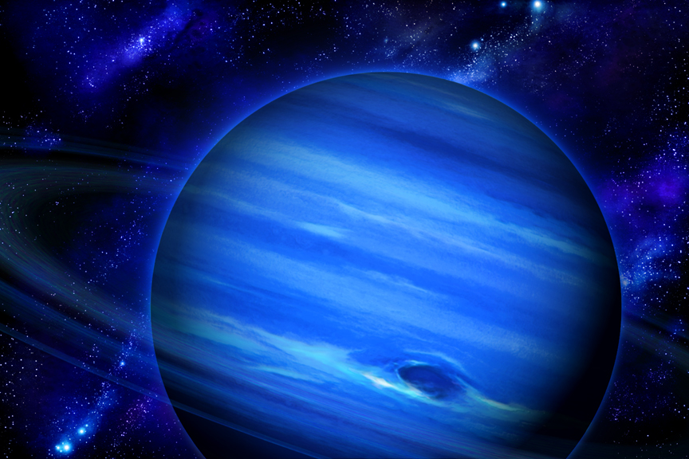

Neptun

- Neptun se roteste in jurul axei in 16 ore 3 min.
- Se invarte in jurul Soarelui in 164.8 ani.
- Temperatura: -220 ° C. Diametrul: 48,600 km.
- Gravitatia: 1.23x a Pamântului.
- Compozitia atmosferei: hidrogen, heliu, metan si amoniac.
- Are 13 luni si 3 inele subtiri, dar si 2 inele mari. A fost vizitat de Voyager 2 în 1989.
- Neptun este a opta si cea mai îndepartata planeta de Soare din sistemul solar.
- Numita dupa zeul roman al marii, este a patra planeta dupa diametru si a treia dupa masa.
- Neptun are o masa de 17 ori mai mare decât cea a Pamântului si putin mai mare decât masa lui Uranus, care este de 15 ori mai greu decât